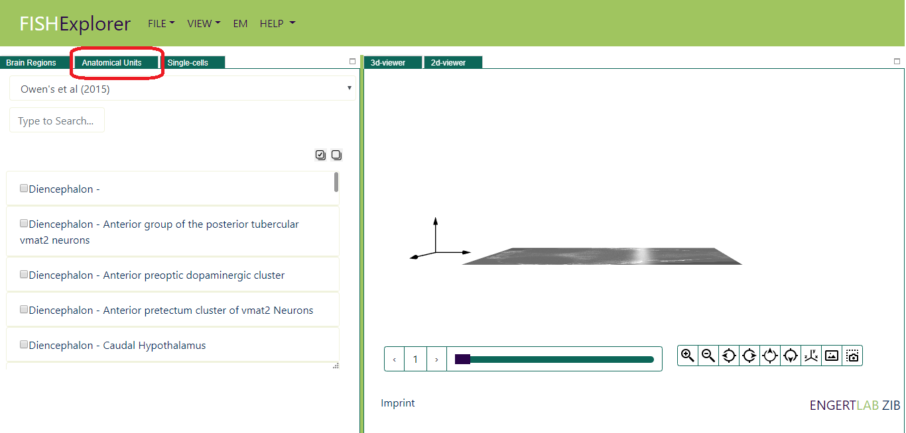
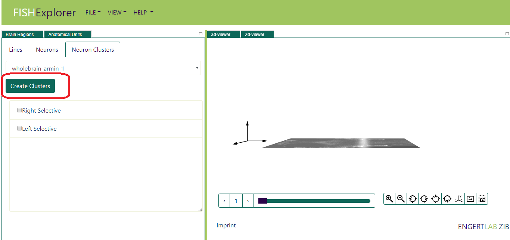
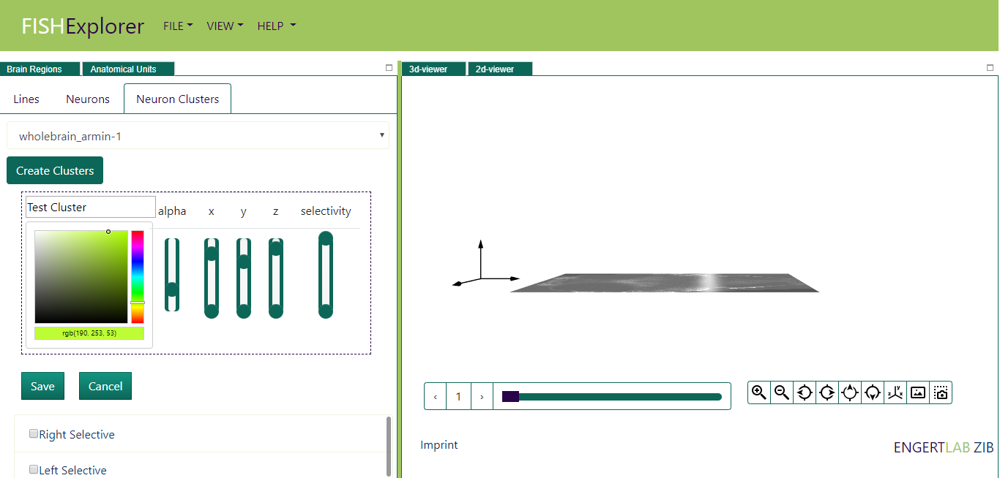
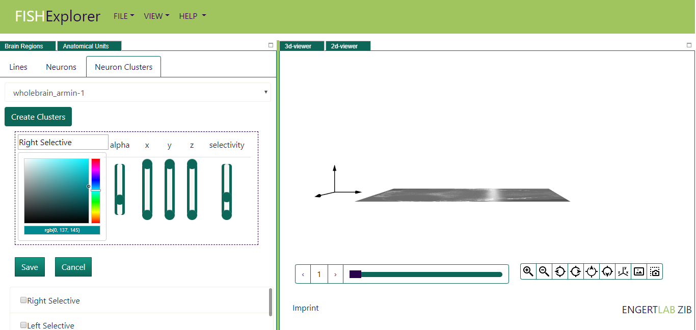
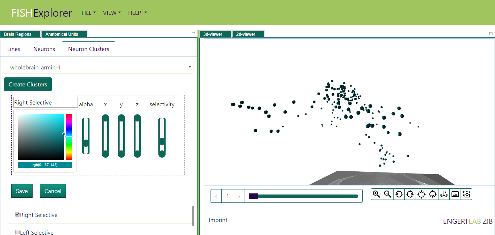
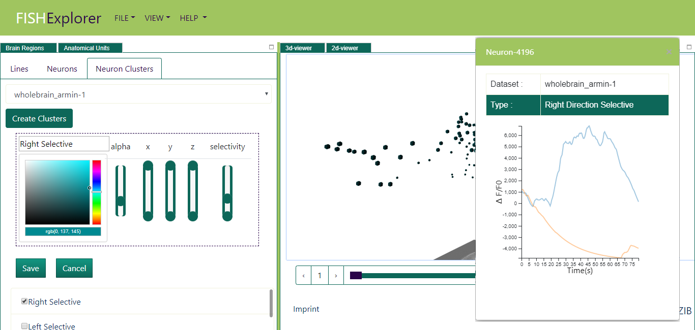

Visualize Cell Traces
-
To understand brain circuits underlying behavior, it is essential to know the relation between
activity and network architecture. Building a
cellular-resolution atlas of the analyzed neurons, understand their spatial organization will allow us to further test and refine our
proposed network model.
This tutorial provides a step-by-step tutorial for the visualization of wholebrain cell clusters measured and mapped
by Armin Bahl.
To demonstrate the functionality of the cell clustering, we consider the wholebrain_armin-1 cellular dataset.
Follow the steps below to display and create cellular clusters: - When FishExplorer is running, a default window like the one shown below appears on the screen.

- Click the tab Anatomical Units (encircled red in the image above), anatomical viewer will appear on screen
and then click Neuron clusters (as shown in the image below).
The currently selected dataset, list of predefined clusters for the selected dataset will appears
on the screen (encircled red in the image below)

-
Imagine now that you want to display e.g. all the cells with following parameters
XMin: 0, XMax: 1406, YMin: 0, YMax: 621, ZMin: 0, ZMax: 137, SelectivityMin: 5001, SelectivityMax: 55171
In order to do that, first click the "Create Cluster" (encircled red in the image above). The cluster with predefined parameters will appear on screen (encircled green in the image below).
-
Next, you can update
the parameters of the cluster by changing the minimium and maximum value of sliders.
Finally, click on the "Save button" so that corresponding cluster will be saved.

- Next, select the checkbox in front of the region as shown above,
the cell clusters will be displayed in the 3D-viewer as shown below.

- Imagine now you want to visualize the response of stimulus to particular cell.
Click the cell in the 3D-viewer, the cell properties and its activity will
appear as shown below.
